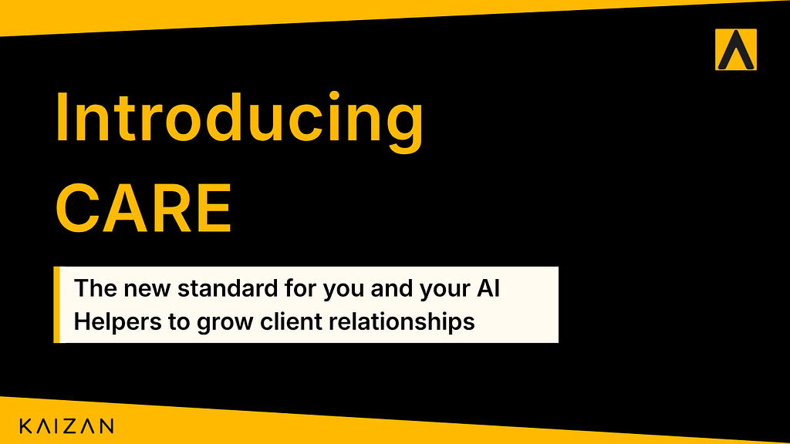

The client relationship has always been the asset. Today it has become an operating system.

Introducing CARE — the standard for client relationship intelligence, live for every Kaizan user today.
Every professional services company runs on a number it never sees.
Not revenue. Not utilisation. The health of the relationship behind the revenue. The thing that decides whether a renewal is a formality or a fight, whether white space converts or doesn’t, whether a client introduces you to three colleagues or quietly briefs a competitor. You live or die by the strength of your client relationships.
Everyone knows it’s the asset. Nobody could measure it. So we managed it the way they always have; a partner’s gut, a biannual NPS survey, a Friday “how are we feeling about this account” conversation, a RAG status someone typed into a slide an hour before the QBR. Lagging, subjective, and almost always too late.
Today that changes. CARE goes into production for every Kaizan user. One score, the four dimensions of client relationships, twenty-four sub signals, built from the calls, emails and interactions your team already has. Not whether a client is happy today. How the relationship is actually tracking.
This is the most advanced way to measure client relationship intelligence that exists, and we’re giving it to the whole market at once. Here’s why we built it, what it is, and what it unlocks.
Why now: the future of account management is people plus agents
The industry is mid-shift. Agents are arriving in client service whether companies are ready or not, drafting follow-ups, surfacing risks, prepping docs, watching accounts overnight. The question stopped being whether agents belong in the relationship and became what they operate from.
And here’s the uncomfortable truth. An agent is only as good as the framework it reasons against. Point an agent at a pile of transcripts and emails with no model of what a healthy relationship looks like, and you get a confident summary and a guess. It can tell you what was said. It can’t tell you whether the relationship is getting stronger or quietly eroding, because it has no definition of either. AI needs to know what great looks like. Your company’s own evaluation set.
People have that definition; it lives in the heads of your best account directors. The problem is it’s never been written down, never been consistent, and never been available to a machine at 2am.
CARE is that definition, made explicit and made shared. It gives humans and agents the same map of the same client.
A shared workspace to collaborate around an account — one place where the AM, the wider team, and Kaizan’s AI Helpers all see the same signals and work the same problem.
A framework that defines what great looks like — so an agent knows the difference between a client venting and a client leaving, and how each account can improve from all the work occurring across the portfolio.
A living, always-on company brain — CARE is the evals of what matters in your company. The way an AI lab writes down the behaviours it wants from a model and grades against them, CARE writes down what a great client relationship looks like and grades every account against it, continuously. Your standards stop living in your best people’s heads and become a measurable, shared definition the whole company — and every agent — works toward.
Software replacing relationship managers was never the future. People plus agents, working from a shared definition of great, 24/7. That’s the future, and CARE is the operating layer that makes it real.
What CARE is: one score, four dimensions, twenty-four signals
CARE is a proprietary relationship intelligence score built from analysing millions of interactions on thousands of clients. It runs continuously on the communication your team already has, and it resolves to a single number on a calibrated scale where 7 is average, so “on track” and “at risk” mean the same thing across every account, every team, every office.
That headline number decomposes into four lenses. Together they spell CARE.
C — Client Satisfaction
How the client actually feels about you and the work, read from the sentiment behind every interaction — not the formal review. Sentiment, your teams market & sector awareness, client goal-to-activity alignment, work quality, and how proactively the team manages expectations. It also covers every commitment made: the client brain remembers what was promised, so you never miss a commitment and the client never has to chase. The reality of the relationship, not the version that surfaces in a status call.
A — Activity with Stakeholders
Whether you’re reaching the people who sign the budget off. Response time, stakeholder coverage against target, decision-maker recency, time invested against tier, communication recency, and contact distribution. This is the lens that catches single-threading before it becomes a churn post-mortem; the decision-maker who hasn’t been on a call in six weeks while day-to-day contact looks perfectly healthy.
R — Relationship Quality
The foundation; follow-through, responsiveness, advocacy. Risk trajectory, active listening, communication-style fit, advocacy signals, sentiment trend, behavioural DISC profiling and conversational depth. The signals that tell you whether trust is building or eroding. The client who was warm and is now merely neutral matters more than the one who was always blunt.
E — Expansion
Where a client is ready to grow; market signals, upsell coverage, organisational coverage, objection handling, proactive insight delivery, and a readiness gate. Crucially, E won’t tell you to push growth into a stressed relationship. Expansion readiness is gated behind satisfaction, relationship strength, and decision-maker access. White space you have permission to pursue, not white space that exists on paper.
Four lenses. Twenty-four sub-signals beneath them. One number. An operating system for real time client relationship health and the intelligence of what do to so your company grows.
The methodology: how the score is actually built
We’re going to be open about how CARE works, because a relationship score you can’t interrogate is a relationship score nobody should trust. If your best account director disagrees with a number, they should be able to open it up and see exactly why it landed where it did, and tell us when we’re wrong.
1. It reads the data you already have. Every sub-signal is defined by its inputs; meetings, email threads, Slack and Teams messages, calendar data, CRM updates, Project Management board movement, deliverables and commitments made, and external signals like client company news and competitor activity. No surveys to chase, no forms to fill. CARE scores the work as it happens.
2. Each of the 24 signals is scored independently against a clear definition. Response time is a rolling average benchmarked to account tier. Decision-maker recency is a last-touch clock with amber and red thresholds. Active listening checks whether a concern raised on Tuesday is acknowledged in Thursday’s follow-up. Advocacy looks for the client pulling you in, new contacts appearing in threads, client-initiated invites, “I’ve shared this with my team.” Each signal has a precise, inspectable definition. None of it is a black box.
3. It’s calibrated to be honest, not flattering. This is where most sentiment tools fail, and where we’ve spent the most effort. CARE is built so that constructive-but-critical content registers as negative, so no score rises without concrete positive evidence, and so smoothing is bypassed for high-severity events, because one serious moment shouldn’t be averaged away by a quiet fortnight. We also detect topic decay. When a theme the client used to care about goes silent, that’s a signal, not an absence of one.
4. It weights what matters and tells you what’s moving. A flat average across 24 signals would be useless; it would bury the one thing that matters this week under twenty-three that don’t. So CARE surfaces trajectory alongside level trends, flags the single sub-signal most to improve, and highlights what’s improving fastest. The score answers “how are we doing”; the structure answers “what do I do Monday morning.”
5. It’s a living model. Your CARE scores and benchmarks are updated in real time as your company evolves. The more context you provide your AI the better the scores become. As you tag stakeholders, provide their SLAs, and load objectives, your scores sharpen. CARE gets more accurate the more your team uses it.
We’re not claiming CARE is finished. We’re claiming it’s the most rigorous, most inspectable, most honestly-calibrated relationship score available, and that it improves every week.
What CARE enables
A number is only worth having if it changes what you do. CARE is built to drive four things.
Put humans and AI Helpers to work 24/7 on ROI, satisfaction and revenue. This is where people-plus-agents becomes operational, and it is the point of the whole framework. Each signal carries defined automation; auto-extract action items and chase them to completion, alert when a decision-maker goes quiet, draft the re-engagement email, surface the expansion brief when signals converge, flag the silent account before the client notices. Your team sleeps. The relationship doesn’t go unwatched. Fewer surprise churns, whitespace opportunities you’re alerted to, leadership reporting that builds itself.
Coach your team on what actually moves relationships. Because every signal is defined and scored per interaction, CARE turns into a coaching engine. It can show an AM that their emails run long for a client who wants three bullets, that they’re strong on delivery but reactive on risk and not sharing enough market intel for this client, that they handled an objection by caving rather than navigating. Coaching opportunities, grounded in real interactions, not an annual review.
Benchmark quality across every client. One calibrated scale across the whole portfolio means you can finally compare like for like; which relationships are thriving, which are at risk, where the best practice lives and where it needs to spread.
Make every relationship legible to leadership. CARE rolls portfolio health into reporting that assembles itself from the ground truth. No more reconstructing account status from memory the night before a board meeting.
And it makes your API and MCP dramatically more valuable
Kaizan has given you programmatic access to your unified client data through our API and MCP server, so your own agents and workflows can build on the unified picture we assemble from across your stack.
CARE changes what flows through those pipes.
Before, an API call returned data; transcripts, contacts, activity, raw signal. Useful, but it left the hardest part to you, turning interaction data into a judgment about relationship health. Now the same endpoints return intelligence. Your agents don’t query raw comms and try to reason about whether an account is at risk; they query CARE and get a calibrated, inspectable, continuously-updated answer, decomposed into the exact sub-signal driving it.
We’ve done the hard part, extracting honest, weighted, trajectory-aware insight from your unified data, so that everything you build downstream starts from a relationship score instead of a pile of text. Every agent you connect through MCP, every workflow you wire to the API, inherits the full CARE model the moment it goes live today. The framework is the moat, and now it’s yours to build on.
Your clients CARE about the relationship. Now you have the data to prove you do too.
The teams that win the next decade won’t be the ones with the most accounts or the cheapest rates. They’ll be the ones who turn institutional knowledge and client relationships, the asset everyone always knew mattered and nobody could measure, into something their people and agents can see, use, benchmark, work from around the clock.
CARE is live in the app today, for every Kaizan user. Open your Kaizan and see it.
See CARE in your portfolio →